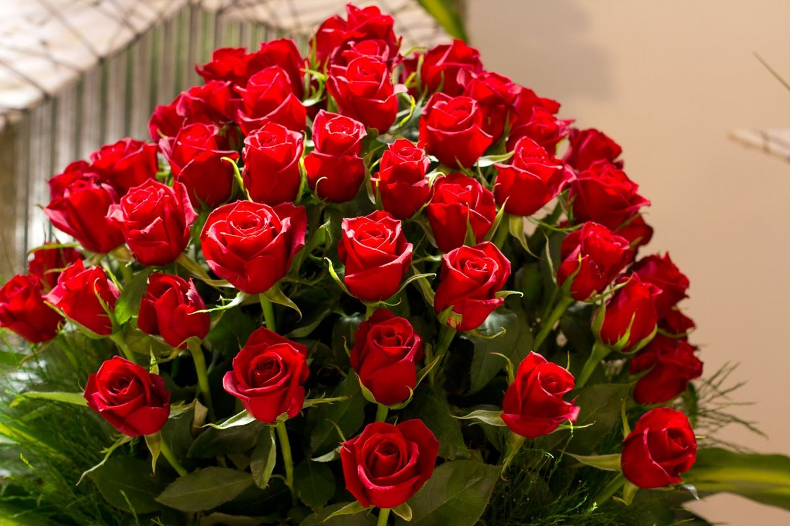
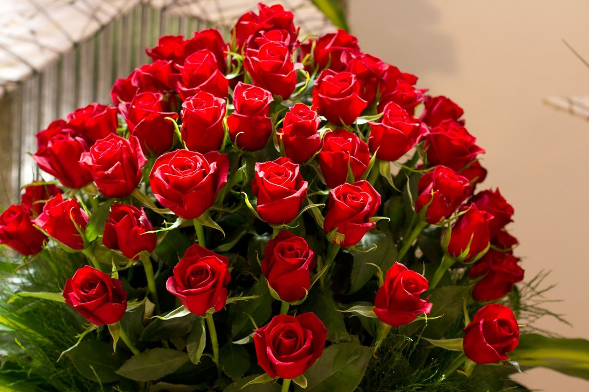
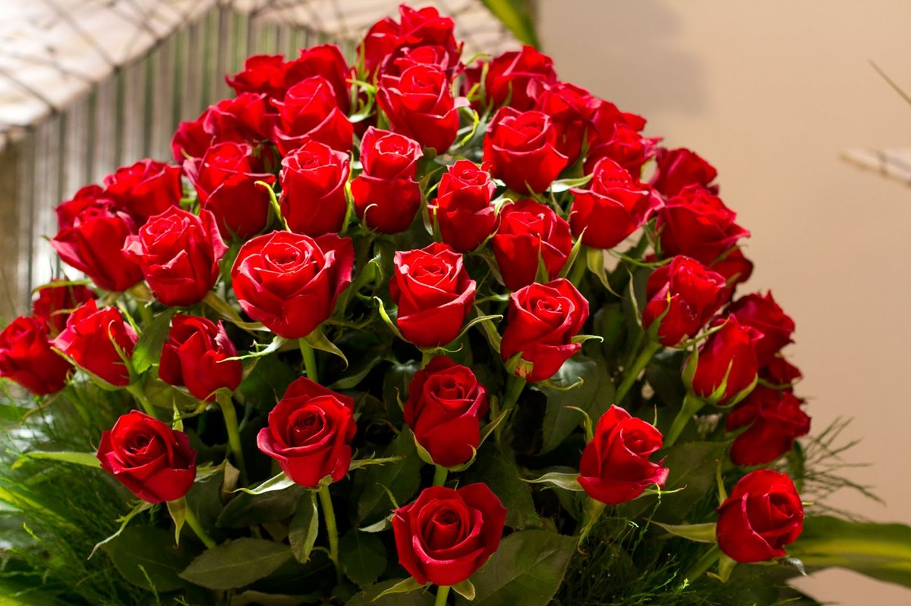
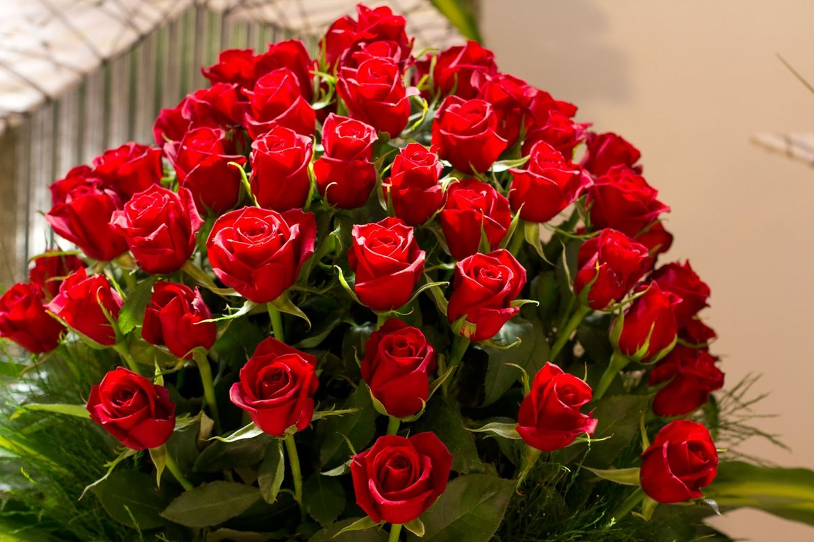

Gul

 



Dunyodagi eng kichik gulning diametri atigi 1 millimetrga teng. Sayyoradagi eng katta gul esa tropik o'simlik - Arnoldning rafflesiyasidir. Uning diametri 91 santimetr, vazni 11 kilogrammga teng. Oq gullar mavjud emas - aslida ular rangsiz bo’ladi, ya'ni rang pigmentlari yo'q va shunchaki quyosh nurini aks ettiradi. Qora pigment ham ranglar dunyosida mavjud emas – gul rangi to’q qizil yoki to’q binafsharangga ega bo'lishi mumkin.